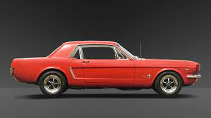
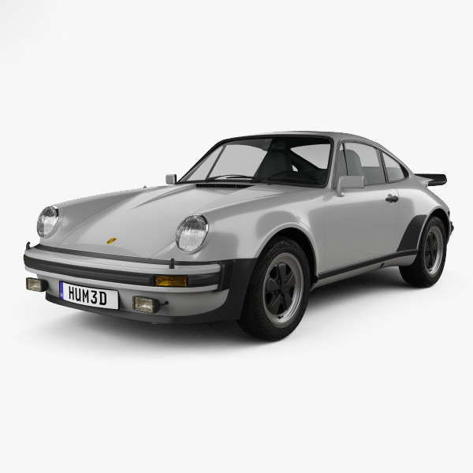

Ford Mustang (first generation)
he first-generation Ford Mustang was manufactured by Ford from March 1964 until 1973. The introduction of the Mustang created a new class of automobile known as the pony car. The Mustang’s styling, with its long hood and short deck, proved wildly popular and inspired a host of competition.
It was initially introduced on April 17, 1964, as a hardtop and convertible with the fastback version put on sale in August 1964. At the time of its introduction, the Mustang, sharing its platform with the Falcon, was slotted into a compact car segment.
With each revision, the Mustang saw an increase in overall dimensions and in engine power. The 1971 model saw a drastic redesign to its predecessors. After an initial surge, sales were steadily declining, as Ford began working on a new generation Mustang. With the onset of the 1973 oil crisis, Ford was prepared, having already designed the smaller Mustang II for the 1974 model year. This new car had no common components with preceding models.
Porsche 911
The Porsche 911 represents vintage driving at its best—particularly during the golden era before the car's 1974 redesign. "There's magic in the early 911," Hagerty says. "It's an amazingly well-built machine that delivers one of the most honest driving experiences of any sports car ever built." Even by today's standards, first-generation 911s still have plenty of horsepower and can hold their own on the track. You can find one, even in mint condition, on eBay.